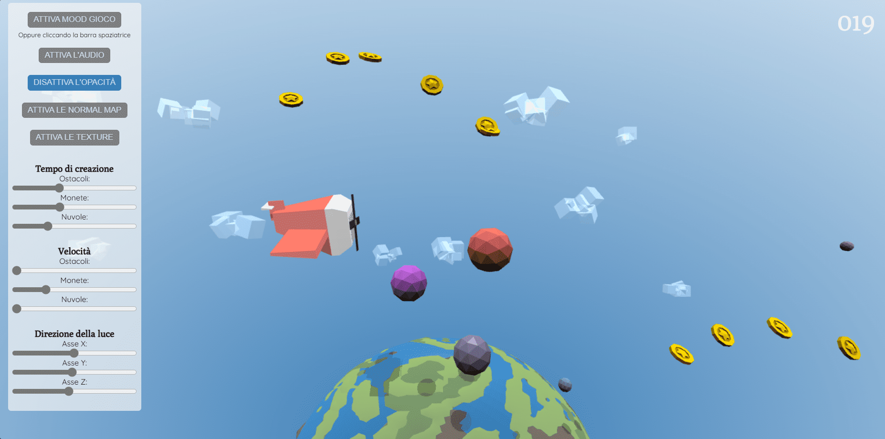

Descrizione del progetto
Introduzione
Il progetto consiste nello sviluppo di un videogioco tridimensionale basato su WebGL.
Questo progetto è stato realizzato nell'ambito del corso di "Computer Graphics A.A. 2023/2024", con l'obiettivo di sviluppare
un'applicazione 3D interattiva utilizzando WebGL (HTML5, CSS e contesto webgl), linguaggi JavaScript e GLSL, su browser Chrome.
Il fine del progetto è acquisire competenze nell'uso di WebGL, un'API JavaScript per il rendering di grafica interattiva 2D e 3D.
Nello specifico, il progetto consiste nella creazione di un videogioco minimal che permette all'utente di assumere
il ruolo di un pilota d'aerei. L'idea centrale è quella di offrire un'esperienza di gioco semplice, ma al contempo immersiva
e dinamica, in cui il giocatore può esplorare i cieli raccogliendo tesori ed evitando ostacoli.
Gioco
Il gioco è un infinite runner, un genere in cui il giocatore controlla un personaggio che si muove
continuamente su una pista piena di ostacoli, monete e altri elementi interattivi.
Lo scopo del giocatore è quello di raggiungere il miglior punteggio, ottenuto sopravvivendo per il maggior tempo possibile,
alcuni videogiochi infinite runner famosi sono Temple Run, flappy bird o T-Rex Game gioco sul Chrome, in assenza di connessione
La scelta di un endless runner è stata motivata dalla sua immediatezza e facilità di gioco che permetto di godere quindi anche
della scena 3D.
Il progetto si basa sull'idea del gioco the Aviator fly it to the end
il cui obiettivo principale è pilotare un aereo evitando gli ostacoli e raccogliendo monete lungo il percorso.

Muovi l'aereo in verticale

Raccogli tutte le monete
Ogni moneta da 1 punto
Con 999 punti il gioco termina

Evita gli ostacoli
Se si tocca il gioco termina
Comandi
I comandi del gioco permettono di controllare l'aeroplano, consentendo il movimento verticale del velivolo.
Comandi per far salire l'aereo:
Mouse: Spostando il mouse verso l'alto l'aeroplano prenderà quota Tastiera: Cliccando o tenendo premuto il tasto di freccia ↑ Smartphone: Cliccando o tenendo premuto il bottone ▲ su schermo
Comandi per far abbassare l'aereo:
Mouse: Spostando il mouse verso il basso l'aeroplano planerà Tastiera: Cliccando o tenendo premuto il tasto di freccia ↓ Smartphone: Cliccando o tenendo premuto il bottone ▼ su schermo
È inoltre possibile cliccando la barra spaziatrice da tastiera attivare e disattivare la modalità di gioco, qualora fosse più comodo rispetto al bottone del menù.
Scelte effettuate
Introduzione
Per l'implementazione del gioco, si è deciso di adottare uno stile grafico semplice ma accattivante, caratterizzato dall'estetica low-poly. Questo approccio, basato su modelli geometrici essenziali e un numero ridotto di poligoni, è stato scelto per garantire chiarezza visiva e mantenere contenuto il peso dei modelli, e quindi del progetto complessivo. In linea con questa filosofia, quasi tutti gli elementi del gioco sono stati realizzati su misura, assicurando coerenza stilistica e funzionale. Un altro aspetto si cui si è posta particolare attenzione è il grado di personalizzazione, in quanto si voleva fornire la possibilità di modificare non solo per i parametri di gioco, ma anche per quelli della scena. Per questo motivo, è stata integrata la possibilità di aggiungere texture e normal map, offrendo all'utente un'opzione per ottenere un effetto visivo più realistico.
Interfaccia
All'interno del gioco sono presenti due schermate principali una relativa al gioco e una finale riassuntiva delle statistiche di gioco come tempo e punteggio.
Schermata di gioco
L'interfaccia di gioco si compone di due sezioni principali: il menu di personalizzazione del gioco e della scena, e il canvas. Il gioco è stato progettato per essere responsive, consentendone l'utilizzo sia su PC che su dispositivi mobili. A tal fine, nel caso in cui si dovesse avviare il progetto da dispositivo mobile l'interfaccia sarà arricchia da due bottoni utili per muovere l'aereo e il menu sarà modificato per essere reso a scomparsa. Questa struttura consente agli utenti di avere un controllo completo sull'esperienza di gioco, rendendola accessibile e personalizzabile.
Il Menu
Il menu consente di personalizzare diversi parametri del gioco. Gli utenti, tramite slider, possono modificare la velocità degli oggetti renderizzati, come nuvole, monete e ostacoli, e impostare il tempo di attesa per la loro generazione. È inoltre possibile regolare la direzione della luce per creare vari effetti di illuminazione. Il menu offre anche la possibilità di attivare o disattivare l'opacità, le normal map e le texture degli oggetti, oltre che la musica di sottofondo, permettendo così un'esperienza personalizzata e adattabile alle preferenze di ciascun giocatore.
Il Canva
Nel canvas vengono renderizzati i modelli e gli elementi di interfaccia necessari per la fruizione della simulazione 3D. La scena di sfondo è costituita da un mondo rotante e da nuvole generate dinamicamente con cubi, al fine di creare un ambiente di volo dinamico e più realistico. Gli elementi di gioco includono un aeroplano, controllabile tramite input da mouse, tastiera o touchscreen, e gli oggetti con cui può collidere, come ostacoli e monete.
Schermata finale
Alla conclusione del gioco, la schermata finale mostra i risultati ottenuti dal giocatore. Anche questa è divisa in due parti: un pannello con i dati da mostrare e un canva di sfondo. Nel pannello sono presenti di dati della partita, quali il punteggio finale ed il tempo di gioco, oltre che ad opzioni per ricominciare una partita o personalizzare la scena. Nel canva sono reinseriti gli oggetti ripresi dalla scena principale, quali il mondo, l'aereoplano e le nuvole. La scena, al contrario di quella di gioco, ha una visione è frontale e viene aggiunto un elemento di cornice sull'aereo che, una volta attivate le texture, mostra la foto richiesta dalle indicazioni del progetto.
Personalizzazione
Il gioco offre numerose opzioni di personalizzazione, come illustrato nelle schermate precedenti, per rispondere alle esigenze dell'utente e consentire un'esplorazione approfondita delle funzionalità offerte da WebGL.
Parametri di gioco
È possibile modificare la velocità degli oggetti in movimento nella scena, come monete, ostacoli e nuvole,
intervenendo su una variabile che viene moltiplicata per il tempo nella traslazione lungo l'asse x degli oggetti.
Quando il valore di questa variabile aumenta, l'oggetto accelera, mentre un decremento ne rallenta il movimento.
Un altro parametro personalizzabile è l'intervallo di tempo per la creazione degli oggetti.
Aumentando l'intervallo, gli oggetti vengono creati meno frequentemente, riducendo la loro presenza nella scena; al contrario,
diminuendo l'intervallo, la creazione degli oggetti avviene più rapidamente, aumentando il numero di elementi nella scena.
Questi due paramenti sono necessari anche per determinare il numero massimo di elementi da renderizzare secondo la formula
variabile / (tempo_di_creazione * velocità), dove la variabile è stata scelta in seguito a numerose prove e varia
a seconda del tipo di oggetto.
Inoltre, è possibile attivare o disattivare la musica e gli effetti sonori, oltre a gestire la
modalità di gioco.
Questa opzione è cruciale poiché, finché la modalità di gioco è disattivata, non sarà possibile avviare il gioco,
e gli oggetti non interagiranno con l'aeroplano, impedendo la possibilità di accumulare punti o subire danni.
Parametri di scena
Viene fornita la possibilità di modificare alcuni parametri di scena, nella prima schermata viene predisposto uno slider per
modificare la
direzione della luce, che è di tipo ortografico, questo permette indirettamente di modificare anche la resa
delle ombre.
Inoltre vengono forniti bottoni per andare a modificare la resa degli oggetti 3D andando ad aggiungere o rimuovere le
texture, le normal map e l'opacità.
Nella schermata finale vengono aggiunti ulteriori parametri di personalizzazione, infatti è possible variare l'
ambiente andando a modificare lo sfondo e l'intesità della luce.
Oltre che i paramentri della camera, sia in merito alla posizione che al targert.
Musica
Si è scelto di aggiungere musica ed effetti sonore per rendere più divertente l'esperienza di gioco.
Viene riprodotta in loop
una musica di sottofondo, in più sono stati aggiunti aggiunti due effetti sonori distinti relativi alla collisione con gli oggetti.
Viene riprodotto un suono tipico dell'acumulo di punti in giochi simili quando avviene una collissione con una moneta, mentre viene
riprodotto un motivetto di gameOver quando avviene la collisione con un ostacolo.
Creazione degli oggetti
Si è scelto di utilizzare tre approcci diversi per quanto riguarda la creazione degli oggetti Per la creazione degli oggetti all'interno del gioco, sono stati adottati tre approcci distinti per adattarsi alle esigenze di modellazione e ampliare le abilità acquisite.
Importazione degli oggetti
Questo approccio è stato utilizzato per la moneta.
Il modello della moneta è stato scaricato da Coin by Quaternius
come file .glt. Il file è stato successivamente importato in Blender, dove sono state effettuate modifiche per adattarlo
alle esigenze del progetto. Una volta completate le modifiche, il modello è stato esportato in formato .obj per essere
integrato nel gioco. Questo processo ha permesso di utilizzare un modello esistente, ottimizzandolo per il contesto
specifico del gioco.
Creazione oggetti su blender
Questo approccio è stato utilizzato per l'aereo, gli ostacoli e i cubi che compongono le nubi.
Per questi modelli è stato adottato un approccio di modellazione diretta in Blender. Questo processo ha permesso di realizzare
modelli personalizzati ed ottimizzati.
Gli ostacoli e i cubi delle nuvole sono stati realizzati utilizzando forme basilari, per poi modificare soltanto alle loro caratteristiche
come texture, rifrazione, opacità e normal map, per conferire loro l'aspetto desiderato.
L'aereo, invece, è stato creato combinando più forme base, ognuna delle quali è stata opportunamente modificata e assemblata.
In particolare l'elica è stata poi esportata come oggetto indipendente per consentirne il movimento all'interno del gioco
una volta importata nel progetto.
Creazione oggetti su nomad sculpt
Questo approccio è stato utilizzato per il mondo.
Il mondo del gioco è stato creato utilizzando Nomad Sculpt, un'applicazione di modellazione 3D compatibile con Android e iOS,
che consente di modellare oggetti 3D attraverso un processo che simula la scultura della creta.
Questo approccio è stato il più complesso e laborioso, poiché ha richiesto l'utilizzo di un'applicazione esterna al flusso di
lavoro principale. Dopo la creazione del modello in Nomad Sculpt, il mondo è stato esportato e successivamente importato in
Blender per ulteriori rifiniture. In Blender, sono state create le mappe UV, consentendo l'applicazione accurata delle texture
e delle normal map alle varie parti del mondo.
Questo processo ha assicurato che il modello finale fosse altamente dettagliato e visivamente coerente con il resto del gioco.
Struttura del progetto
La struttura del progetto è organizzata in modo da garantire una chiara separazione dei file e delle risorse necessarie
per l'esecuzione e la gestione del gioco.
Dal punto di vista dell'architettura del codice, si è deciso di suddividere il progetto in moduli per garantire una
maggiore manutenibilità, facilitando la loro estensione e modifica.
Di seguito viene presentata la suddivisione dei file e delle cartelle:
Divisione dei file
üìÅproj
├─── endGame.html
├─── index.html
├─── style.css
‚îú‚îÄ‚îÄ‚îÄüìÅdoc
│ ├─── documentazione.html
‚îÇ ‚îî‚îÄ‚îÄ‚îÄüìÅimg
‚îú‚îÄ‚îÄ‚îÄüìÅjs
‚îî‚îÄ‚îÄ‚îÄüìÅsrc
├─── ...
‚îú‚îÄ‚îÄ‚îÄüìÅsound
‚îî‚îÄ‚îÄ‚îÄüìÅtexture
Nella directory principale, si trovano i file HTML delle due pagine del gioco: index.html e endGame.html.
Ed il file style.css contiene l'unico foglio di stile utilizzato per uniformare l'aspetto grafico di tutte le pagine.
La cartella doc contiene la documentazione relativa al progetto: la pagina HTML e una sottocartella img con le immagini utilizzate.
Nella cartella js sono raccolti tutti i file JavaScript necessari per la gestione del gioco e la renderizzazione della scena 3D,
che saranno approfonditi nel prossimo paragrafo
La cartella src contiene tutti i modelli 3D necessari per il gioco, archiviati in formato .obj, insieme ai relativi file .mtl
che specificano i materiali utilizzati.
All'interno di src sono presenti due sottocartelle: sound, che include tutti i file audio del gioco e texture, che raccoglie
le texture e le normal map utilizzate negli mtl per la renderizzazione degli oggetti.
File js
cameraAndLightSetup.js gestisce la configurazione della telecamera e delle luci all'interno della scena 3D, fornendo due differenti configurazioni uno per la scena di gioco ed uno per la scena finale. cloud.js gestisce la generazione ed il render delle nuvole nella scena 3D. Le nuvole sono create come combinazione di cubi con paramentri (dimensioni, posizioni e rotazioni) psedorandomici. collectibles.js gestisce la generazione ed il render degli oggetti interattivi (ostacoli e monete), oltre che le loro collisioni nella scena di gioco. createObj.js gestisce il caricamento e processamento di modelli 3D nel formato OBJ insieme ai loro materiali e texture definiti nei file MTL. drawScene.js gestisce il rendering della scena e degli oggetti, fornendo due differenti configurazioni uno per la scena di gioco ed uno per la scena finale. endGame.js gestisce la transizione della schermata di fine gioco, viene utilizzato per caricare il contenuto della pagina di fine gioco, salvare i dati relativi al punteggio e al tempo di gioco, e inizializzare l'interfaccia della schermata finale. mousePosition.js gestisce l'interazione (mouse, tastiera, bottoni) per controllare il personaggio del gioco, verificando le collisioni con gli oggetti. objLoad.js gestisce le funzioni per caricare e analizzare file OBJ e MTL, creando texture e gestendo la loro configurazione. renderObj.js gestisce il render e le matrici di trasformazione dei principali elementi di gioco. renderScene.js gestisce il rendering delle scene, sia quella di gioco che della scena finale, impostando gli oggetti di gioco, le ombre e le matrici di proiezione. script.js gestisce l'inizializzazione e il rendering della scena di gioco: carica gli oggetti 3D, configura la telecamera e la luce ed avvia il rendering della scena. scriptEnd.js gestisce l'inizializzazione e il rendering della scena finale: carica gli oggetti 3D, configura la telecamera e la luce, imposta gli eventi di input ed avvia il rendering della scena. utils.js contiene funzioni di utilità per gestire vari aspetti del gioco. vsfs.js contiene gli shader di vertex e fragment utilizzati per il rendering degli oggetti. */
üìÅjs
├─── cameraAndLight.js
├─── cloud.js
├─── collectibles.js
├─── createObj.js
├─── drawScene.js
├─── endGame.js
├─── mousePosition.js
├─── objLoad.js
├─── renderObj.js
├─── renderScene.js
├─── script.js
├─── scriptEnd.js
├─── utils.js
└─── vsfs.js
Funzionalità implementate
Texture
Nel progetto, viene utilizzato il texture mapping per migliorare il realismo degli oggetti di gioco, applicando immagini
bidimensionali sul superfici tridimensionali.
Le texture, scaricate da ambientCG, sono state applicate agli oggetti tramite Blender.
Il rendering delle texture può essere controllato attraverso una flag denominata `enableTextureMap`, che permette di
attivare o disattivare la visualizzazione delle texture sugli oggetti.
Nello shader, la gestione delle texture viene effettuata passando la variabile useTextureMap, definita come:
useTextureMap: enableTextureMap && isTextured, dove `enableTextureMap` è una flag globale per l'attivazione delle texture, mentre `isTextured` è una flag
specifica per ogni oggetto per indicare se questo ha delle texture associate.
Nel fragment shader, il colore finale dell'oggetto viene calcolato come segue:
effectiveDiffuse = mix(diffuse, diffuseMapColor.rgb, useTextureMap) * v_color.rgb
In questa formula, se useTextureMap è false (0.0), il colore finale (v_color.rgb) sarà moltiplicato solo
per il colore di base dell'oggetto.
Mentre useTextureMap è true (1.0), il colore finale sarà invece moltiplicato per la texture dell'oggetto.
Per permettere questa funzionalità, è stato necessario modificare i file .mtl degli oggetti, in modo tale che fosse incluso
anche il colore di base oltre che la texture da applicare.
Infine come si può notare nelle immagini illustrative le texture non sono state applicate a tutti gli oggetti, ma solo al
mondo, alle nuvole, alle monete e alla foto della schermata finale.
Bump mapping
Nel progetto, è stato implementato il normal mapping, una tecnica di bump mapping, per aggiungere dettagli visivi alle
superfici degli oggetti senza aumentare il numero di poligoni.
Questa tecnica permette di simulare rilievi e asperità sulle superfici, migliorando l'ambiente di gioco e rendendolo più
realistico.
Anche in questo caso le normal map sono scaricate da ambientCG e applicate agli oggetti
tramite Blender.
Per controllare il rendering delle normal map, è stata utilizzata una flag denominata `enableNormalMap`, che consente
di attivare o disattivare la visualizzazione delle normal map sugli oggetti.
All'interno dello shader, è stato aggiunto un controllo che utilizza le normal map solo se questa flag è attiva:
if (useNormalMap == 1.0) {
vec3 tangent = normalize(v_tangent);
vec3 bitangent = normalize(cross(normal, tangent));
mat3 tbn = mat3(tangent, bitangent, normal);
normal = texture2D(normalMap, v_texcoord).rgb * 2.0 - 1.0;
normal = normalize(tbn * normal);
}
Anche in questo caso, come si può notare nelle immagini illustrative, le normal map non sono state applicate a tutti gli
oggetti, ma solo al mondo, all'aereo ed agli ostacoli.
Trasparenze
Le trasparenze sono state implementate per migliorare l'aspetto visivo di elementi come le nuvole e l'acqua del mare, che
richiedono un certo grado di trasparenza per apparire realistiche.
Per gestire questa funzionalità, è stata introdotta una flag denominata `alphaEnable`, che consente di attivare o
disattivare la visualizzazione delle trasparenze sugli oggetti.
Durante il rendering della scena, viene effettuato un controllo che abilita o disabilita il blending in base allo stato
della flag:
if (alphaEnable) {
gl.enable(gl.BLEND);
gl.blendFunc(gl.SRC_ALPHA, gl.ONE_MINUS_SRC_ALPHA);
} else {
gl.disable(gl.BLEND);
}


Ombre
Per aumentare il realismo del gioco, sono state implementate ombre dinamiche che seguono il movimento degli oggetti in
relazione alla fonte di luce, aggiungendo profondità alla scena e migliora la percezione spaziale.
Le ombre vengono generate attraverso un processo di rendering aggiuntivo, che prevede un ulteriore render della scena
con un'uniform relativa alle ombre:
const sharedShadowUniforms = {
u_lightDirection: m4.normalize(lightPosition),
u_view: m4.inverse(lightMatrix),
u_projection: lightProjectionMatrix,
u_textureMatrix: m4.identity(),
u_projectedTexture: depthTexture,
u_bias: -0.0099,
};
Per quanto riguarda l'illuminazione della scena di gioco, è stata scelta una proiezione ortografica per la luce,
che garantisce ombre uniformi e adatte a rappresentare la superficie del mondo:
lightProjectionMatrix = m4.orthographic(-100, 100, -150, 50, 0.5, 250 );
Al contrario, nella scena finale del gioco, si è optato per una luce con proiezione prospettica:
lightProjectionMatrix = m4.perspective(fieldOfViewRadians, aspect, 15, 250);
In entrambi i casi, il punto di mira della luce rimane il mondo, assicurando che gli oggetti proiettino ombre coerenti
sulla superficie del terreno.
Questo approccio permette di ottenere ombre che variano dinamicamente a seconda della posizione e dell'orientamento degli
oggetti rispetto alla luce, migliorando così l'impatto visivo complessivo del gioco.
Variazione luminosa
Nella schermata finale del gioco è stata introdotta una funzionalità di personalizzazione dell'ambiente, permette di
simulare tre diverse situazioni atmosferiche, alba, giorno e notte, variando il colore di sfondo e l'intensità luminosa.
Il sistema di variazione è implementato tramite il colore di sfondo del canva ed una variabile chiamata intensityLight,
che regola l'intensità della luce nella scena.
Nel fragment shader, questa variabile viene utilizzata per calcolare il colore finale degli oggetti nella scena:
vec4 gCol = vec4(
emissive + ambient*u_ambientLight +
effectiveDiffuse*useIntensityLight*fakeLight +
effectiveSpecular*useIntensityLight*pow(specularLight,shininess),
effectiveOpacity
);
Per l'alba, l'intensità è impostata a 1.5, creando un'atmosfera più luminosa, mentre per la notte, l'intensità è ridotta a 0.5,
producendo un effetto più scuro. La modalità giorno utilizza un valore di default di 1.0, che rappresenta una luminosità
bilanciata e naturale.
Effetti di luce
Per migliorare ulteriormente la resa visiva della scena, sono stati aggiunti effetti di luce su superfici lucide come l'acqua,
la neve, gli ostacoli e le monete.
Questi oggetti, quando illuminati direttamente, creano riflessi che aggiungono realismo e profondità all'ambiente di gioco.
Al contrario, altri elementi, come l'aereo e le superfici terrestri, sono stati lasciati privi di riflessi per creare un
maggiore contrasto visivo nella scena.
Un aspetto importante da considerare è che questi effetti di luce e riflessione sono visibili solo quando gli oggetti sono
colpiti direttamente dalla fonte di luce.
Di conseguenza, per oggetti che variano la loro posizione lungo l'asse Z, come gli ostacoli, o per modifiche della direzione
della luce questi effetti potrebbero non essere sempre visibili.
Variazione del colore degli oggetti
Nel progetto è stata implementata una funzionalità che consente di variare il colore degli ostacoli, permettendo così di
utilizzare un unico modello 3D per creare oggetti visivamente differenti. Questa soluzione non solo riduce il numero di
risorse necessarie per il rendering, ma aggiunge anche varietà visiva al gioco senza dover caricare ulteriori file.
L'implementazione avviene attraverso l'uso della proprietà diffuse all'interno della uniform dell'ostacolo, che viene aggiornata
dinamicamente per riflettere il colore calcolato randomicamente:
color: [rand(0.3, 0.9), rand(0.3, 0.9), rand(0.3, 0.9)],
const updatedMaterial = {
...material,
diffuse: data.color,
u_world: u_worldObstacle(data),
useNormalMap: enableNormalMap,
useTextureMap: 0.0
};
Questa tecnica potrebbe essere estesa in sviluppi futuri anche ad altri oggetti di gioco, come l'aereo o gli elementi dello
scenario, aumentando ulteriormente la personalizzazione visiva del gioco.
Sviluppi futuri
Il progetto presenta opportunità di miglioramento, sia dal punto di vista delle dinamiche di gioco e dell'interazione che della
qualità visiva e resa della scena 3D.
Un primo sviluppo potrebbe essere l'implementazione di una classifica che memorizzi lo storico dei punteggi delle partite giocate,
offrendo così un elemento di competizione e incentivando i giocatori a migliorarsi continuamente.
Inoltre, l'introduzione di livelli progressivi o di un aumento graduale della difficoltà in base al tempo di gioco renderebbe
l'esperienza più stimolante e adatta a diverse tipologie di giocatori.
Sul fronte del gameplay, l'aggiunta di nuovi ostacoli, oggetti che conferiscono vite extra o bonus speciali, potrebbe arricchire
l'esperienza e mantenere alto l'interesse del giocatore nel lungo periodo.
Infine un'ulteriore espansione riguardante le dinamiche di gioco potrebbe riguardare l'introduzione di nuove modalità,
come il multiplayer, che aggiungerebbe un livello di interazione sociale e competitiva.
Dal punto di vista scenografico, migliorare l'aspetto realistico e dinamico della scena rappresenta un altro passo avanti.
Ad esempio, simulare il ciclo giorno-notte con variazioni nei colori, nella posizione del sole e nell'intensità della luce,
renderebbe l'ambiente di gioco più realistico e immersivo.
Anche l'inclusione di elementi decorativi, come uccelli in volo o cambiamenti ambientali basati sul trascorrere del tempo,
potrebbe contribuire a creare un'atmosfera più vivace e coinvolgente.
Un'idea particolarmente interessante sarebbe quella di permettere ai giocatori di scegliere tra diversi scenari, pur mantenendo
le stesse meccaniche di gioco; scenari alternativi potrebbero essere lo spazio con una navicella o il mare con un sottomarino.
Questi potrebbero offrire una varietà maggiore e mantenere il gioco fresco e stimolante.
Riferimeti
Durante lo sviluppo del progetto, sono stati consultati diversi materiali di riferimento: Documentazione WebGL: Per comprendere e implementare le tecniche di rendering 3D. The Aviator: Per la base dell'idea di gioco. Blender: Per la creazione e la modifica di oggetti 3D. Nomad Sculpt: Per la modellazione di oggetti 3D. AmbientCG: Per l'acquisizione di texture. Polypizza: Per l'acquisizione di modelli 3D